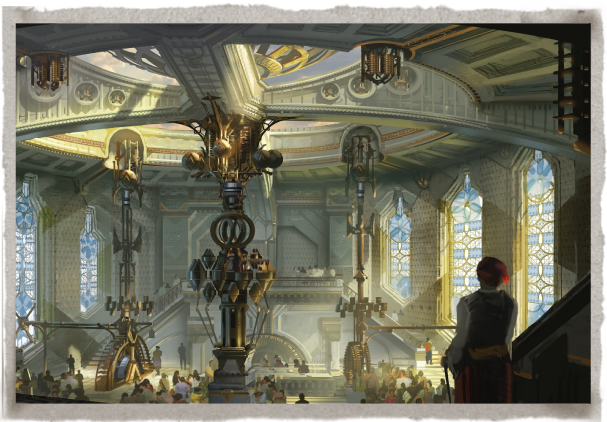
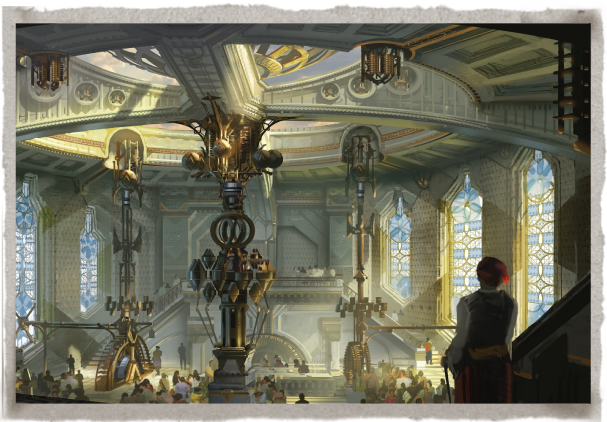
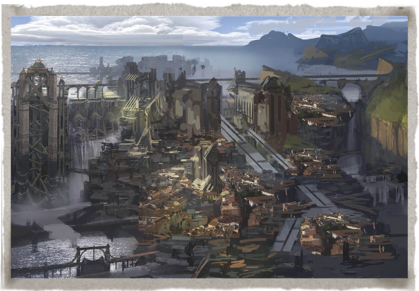
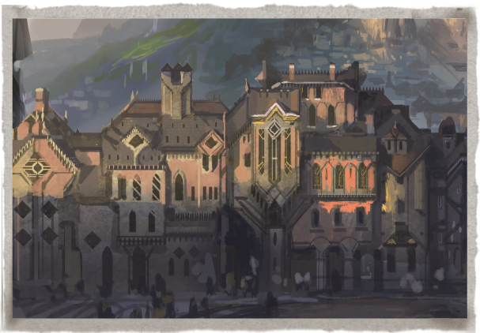
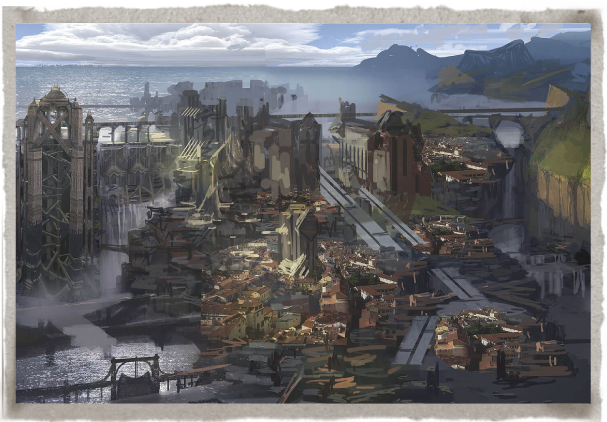
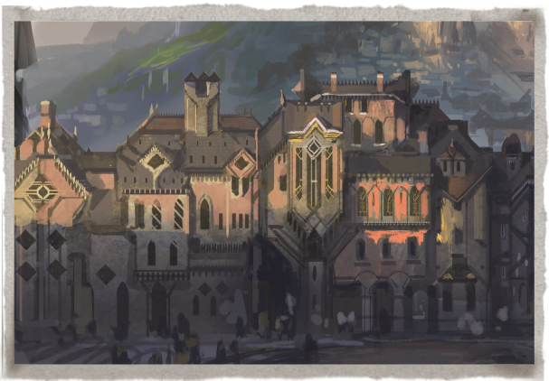
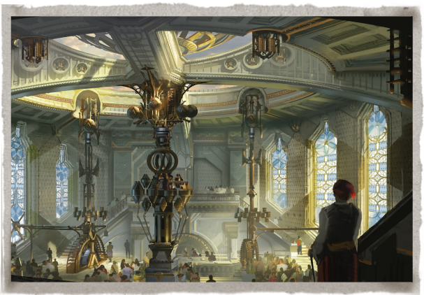
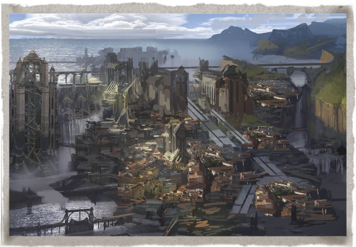
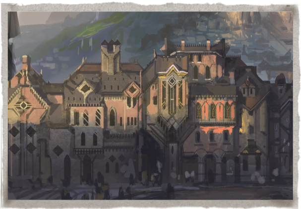

 



Piltover es una ciudad progresista, con un poder e influencia en auge. Es el centro cultural de Valoran y el arte, la artesanía, el comercio y la innovación siempre van de la mano. Su poder no es de carácter militar, sino comercial y emprendedor. Situado en los acantilados que lo separan de Zaun por el océano, Piltover acoge a flotas enteras de barcos mercantiles que cruzan las gigantes puertas marítimas para traer bienes provenientes del resto del mundo. Esta riqueza ha provocado un crecimiento sin precedentes en la ciudad. Piltover se ha ido convirtiendo en una ciudad en la que se puede hacer una fortuna y vivir un sueño. Los clanes mercantiles aportan los fondos necesarios para desarrollar las empresas más increíbles: desde enormes locuras artísticas a investigación esotérica hextech, pasando por monumentos arquitectónicos en honor a su poder. Con cada vez más inventores indagando en el mundo hextech, Piltover se ha convertido en un imán para los artesanos más habilidosos de todo el mundo.


